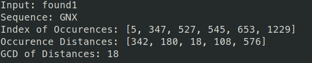
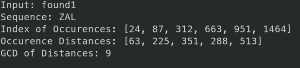
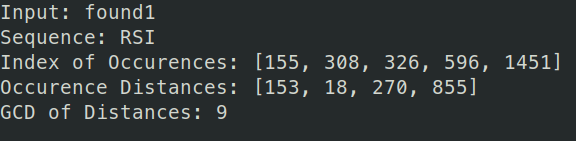

Krypton is the next installment in the OverTheWire wargames. These challenges are designed to give experience in cryptography and cryptanalysis. You are encouraged to find the solutions yourself rather than turn to a premade cryptanalysis tool.
For the first level, we are given the password as a Base64 encoded string. All we have to do is use base64 -d to decode the string.
So we can see the password for level 1 is KRYPTONISGREAT
We are told the password for level 2 is in a file called krypton2. We are also told that the file has been encrypted by a simple rotation algorithm.
The first step is to find the file. After poking around, we find the file in /krypton/krypton1/
There we can look at the README. In that file we are told the password is 'encrypted' using the ROT13 algorithm. In this algorithm, a letter is replaced with the 13th letter after it. The alphabet is treated as a circular list, where 'z' loops back around to 'a'. So in this case, in ROT13, the letter 'x' is replaced with the letter 'k' and vice versa. This means applying the algorithm to a string twice returns the original string.
To solve this, we can use the Unix program tr, which translates characters. The program accepts sets of letters as the arguments. To preform the ROT13 algorithm, we execute tr 'A-Za-z' 'N-ZA-Mn-za-m'. The arguments means that each character in the first set is replaced by the second set, so 'A' is replaced by 'N', and same for lowercase letters.
So we have the password for level 2 is ROTTEN
For this level, we are introduced to the Ceasar Cipher. This algorithm shifts letters along the alphabet by a certain set number. This is similar to ROT13, where instead of shifting by 13, we can shift by any amount.
The encrypted password is in the file krypton3. We also has a binary, encrypt, that performs the Ceasar Cipher according to the keyfile.dat on the given file.
First, we have to set up our environment to work in a temporary directory by linking keyfile.dat to our directory.
Then running the encrypt binary on krypton3, we get a file called ciphertext, which is the result of the cipher being executed.
Comparing the result to the original string, we can see it is rotated 12 letters. We can solve this cipher by brute force fairly easily. the process would be that we copy the results from ciphertext to another file, and apply the cipher again until we see a result that makes sense.
We finally get a result that makes sense. So we have the password to level 3 is CAESARISEASY
For this level, we are told that the password is encrypted using a substitution cipher, however, we do not know the key for cipher. This makes it much more difficult to brute force the problem.
Luckily, we are given several files also encrypted with the same cipher, found1, found2, and found3. Given these files, we can use frequency analysis to determine which letters were substituted in.
The basics of frequency analysis relies on the fact that certain letters in English are used more often than others. In particular we can refer to this chart to see the frequency of letters in the English language.
To preform simple frequency analysis on these files, all we have to do is use grep -o "letter" on the file where "letter" is in the range A-Z. This will give us all line of occurences of "letter". The we use wc -l on the result to count the number of lines that we got back.
So what we need to do is loop through all A-Z, take the occurence count, format it properly and put the number in a file in a temporary directory. Then we can sort the file to see the frequency of letters for the file.
We can take these results and compare to the letter frequency chart. Looking at the results, the letter "S" is the most frequent, which would lead us to believe that "S"->"E", being that the letter "E" is the most frequent in the alphabet.
Now comes the tedious step, of lining up the frequency we observed to the real letter frequency. Simply lining up the letter frequency will not get you the correct answer.
The next idea in frequency analysis is by using the fact that certain sequences are more common that others in the english language. You can learn more by visiting https://www3.nd.edu/~busiforc/handouts/cryptography/cryptography%20hints.html
I found the analysis of these files by using a pre-made frequency analysis. Specifically http://www.richkni.co.uk/php/crypta/freq.php. With this information, we can start building back up the ciphertext to plaintext.
We find that the plaintext is translated into ciphertext using the following key:
Ciphertext: A B C D E F G H I J K L M N O P Q R S T U V W X W Z
Plaintext: B O I H G K N Q V T W Y U R X Z A J E M S L D F P C
So we have the password for level 4: BRUTE
For this level, we are told that we will be dealing with a Vigenère Cipher. This cipher is a polyalphabetic cipher where the mappings are decided by a key of a known length.
The basics of the Vigenère Cipher is well explained by Geeks for Geeks here
Essentially, we use the key(K) to cipher the plaintext(P) by adding the next character of K to the next character of P. If we reach the end of the key(K), we roll back to the beginning. If a letter exceeds 25 in value, we roll back to 0 (working in modulo 26 for the English alphabet).
We are given the fact that the key length is 6 and that we have two longer messages, found1 and found2 encrypted with the same key.
The key to this challenge is that we have to do frequency analysis on the longer messages, specifically to separately find the characters to the key. Since we know that the key length is 6, to find the key's first letter, we must look at the 1st letter, then the 6th, then the 12th, and so on. From this we can see the most common letters amongst the result and work backwards to find the key.
The following commands first remove the whitespace in found1 and stores it in F1. Then we find the length of F1. After that, we do a for loop, from 0 to the length of F1 in increments of 6, index those characters from F1, and write the result to freq, which is stored in a temporary directory. Then, we use the command from last level to find the count of the letters in freq
So we have the most common letter is J, we know from the last level that the most common letter is usually E. This means that if we number the alphabet from 0, we get the value for J is 9 and E is 4. So the first letter is at index 5 in the alphabet to move E to J. So we have the first letter of the key is F
To get the rest of the letters, just change the starting of the indexing for the characters in F1. Starting the indexing at 1 and following the frequency analysis will get you the 2nd letter to the key.
The final key ends up becomind FREKEY.
To finish off this level, we need to decipher krypton5. You can program this yourself, but I tend to use https://www.dcode.fr/vigenere-cipher to quickly decode the cipher.
So we have the password for level 5 is CLEAR TEXT
For this level, we are told that we have another polyalphabetic cipher, but this time the key size is unknown.
To find the unknown keylength, we have to do what is known as Kasiski's Method. The idea behind this method is that we search the ciphertext for repeated fragments, then compile a list of distances that separate the repetitions. The keyword length is likely to divide many of these distances. This is explained in further detail at https://pages.mtu.edu/~shene/NSF-4/Tutorial/VIG/Vig-Kasiski.html
To quickly find repeated fragments, I am going to use http://www.richkni.co.uk/php/crypta/freq.php again. Putting the contents of found1 into the site, we get:
Now we can find the distances between these sequences. For the fragment "GNX", we see it appear at the indexes [5, 347, 527, 545, 653, 1229]. This gives us the distance between the sequences as [342, 180, 18, 108, 576]. The length of the key is likely to be something that divides these distances, otherwise known as the Greatest Common Divisor (GCD)
The GCD of these distances is GCD(342, 180, 18, 108, 576) = 18. So the length of the key could be 18. Let's also try the other sequences that we got to be sure.
  Now we make the guess that the keylength is 9, given the information we have. We can preform the same analysis as last level, assuming keylength of 9. I used python for this, where we find the most common letter for the index and find the key's letter that would create that cipher. I have also removed the spaces of found1 so that the indices are correct.
Running that, we get the possible key as XEYLENCTH. Running the same script on found2 we get the key KOYLENVTQ, and on found3 we get YEULERGTH
Now, we can preform further analysis or simply take an educated guess. Looking at the results from found1 and found2, it seems as if the key is KEYLENGTH. Checking this on found1, we get the decrypted plaintext:
A Charlie Dickens quote from A Tale of Two Cities. Now we can decrypt krypton6
So we have the password for level 6 is RANDOM
For this level, we are told that the cipher differs from previous levels. Firstly, the cipher is now a stream cipher. This means that instead of using a fixed size key throughout the plaintext, the key is generated on-the-fly using a random number generator.
In the directory, we see the binary encrypt6, this has the will encrypt the given plaintext into ciphertext using keyfile.dat as the key.
We are given that this challenge may be difficult given that the key is randomly generated. Fortunately, looking at HINT2, we are told the random number generator is an 8 bit Linear Shift Feedback Register.
A linear shift feedback register is a relatively weak way of generating pseudo-random numbers. The main fault is that for an n bit LSFR, the pseudo-random numbers cycle, at a maximum, every 2n - 1 states. So for our 8 bit LSFR, we can expect the numbers to cycle every 255 or less numbers. Now we can look at exactly how many states it takes before the numbers cycle by encrypting a long string of the same letter and looing for a pattern.
For this, we will write a string of length 256, which guarantees the ciphered text will cycle at least 1 letter.
We can see the pattern EICTDGYIYZKTHNSIRFXYCPFUEOCKRN appear, which is 30 characters long, this means that out 8 bit LSFR cycles every 30 numbers.
To decrypt the file, we have to look at the behaviour one more time, this time we encrypt the character B repeatedly.
So comparing the first letters of each cipher, the cipher sent A to E and B to F. So the cipher also increases according to the letter's position in the alphabet. It should also be noted that in comparing the 10th letter of the cipher, the letter A is sent to Z and B is sent to A. This means that the cipher is also circular and that we are working with the plain alphabet.
So to break the cipher, we can use the results of the first cipher which we will simply call cipher. For each letter in krypton7, we subtract from it the next letter in cipher, and subtract again the value of the letter A, since we used that letter to generate cipher. Then, so as to keep the letters in the alphabet, is the result is less than A, according to the ASCII chart, we add 26. This gives us the corresponding plaintext letter. The C code below shows the steps.
Running the code, we get the final decrypted password, LSFRISNOTRANDOM.